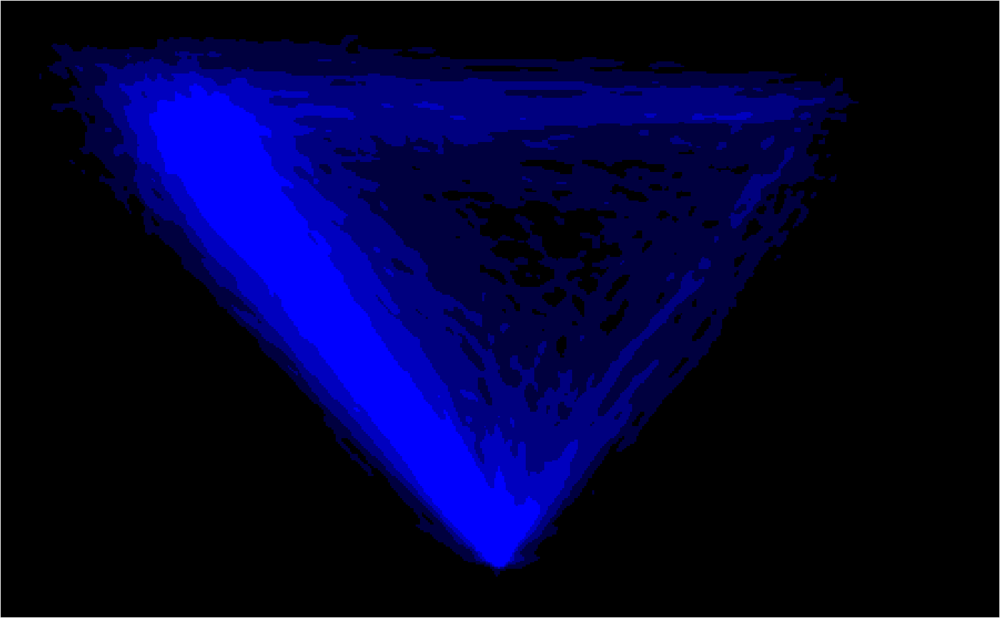

mt_heatmap_ggplot plots high resolution raw trajectory maps. Note that
this function has beta status.
mt_heatmap_ggplot(data, use = "trajectories", dimensions = c("xpos", "ypos"), use2 = "data", facet_row = NULL, facet_col = NULL, ...)
| data | a mousetrap data object created using one of the mt_import
functions (see mt_example for details). Alternatively, a trajectory
array can be provided directly (in this case |
|---|---|
| use | a character string specifying which trajectory data should be used. |
| dimensions | a character vector specifying the trajectory variables used to create the heatmap. The first two entries are used as x and y-coordinates, the third, if provided, will be added as color information. |
| use2 | an optional character string specifying where the data that
contain the variables used for faceting can be found (in case these
arguments are specified). Defaults to "data" as |
| facet_row | an optional character string specifying a variable in
|
| facet_col | an optional character string specifying a variable in
|
| ... | arguments passed to mt_heatmap_raw. |
mt_heatmap_ggplot wraps mt_heatmap_raw and returns a ggplot
object containing the plot. In contrast to mt_heatmap_plot plots
created by mt_heatmap_ggplot can be extended using ggplot's +
operator. For further details on how the trajectory heatmaps are constructed,
see mt_heatmap_raw.
Wulff, D. U., Haslbeck, J. M. B., Kieslich, P. J., Henninger, F., & Schulte-Mecklenbeck, M. (in press). Mouse-tracking: Detecting types in movement trajectories. In M. Schulte-Mecklenbeck, A. Kuehberger, & J. G. Johnson (Eds.), A Handbook of Process Tracing Methods. New York: Taylor & Francis.
Kieslich, P. J., Henninger, F., Wulff, D. U., Haslbeck, J. M. B., & Schulte-Mecklenbeck, M. (in press). Mouse-tracking: A practical guide to implementation and analysis. In M. Schulte-Mecklenbeck, A. Kuehberger, & J. G. Johnson (Eds.), A Handbook of Process Tracing Methods. New York: Taylor & Francis.
mt_heatmap for plotting a trajectory heatmap using base plots.
mt_diffmap for plotting trajectory difference-heatmaps.
mt_heatmap_ggplot(KH2017, xres=500, n_shades=5, mean_image=0.2)#> spatializing trajectories #> calculate image #> smooth image #> enhance image by 26.5